F-236 / SF-236-22 → SF-236-27. Les nouvelles vues de Jarvis : replay visuel d'un tour (lecteur privé, ×1 / ×4, pause, image par image) et « Pendant votre absence » ; mode présentation sans fuite (?presentation=1 : personnes en initiales, ni coût, ni sortie, ni détail) ; vue cockpit sur un second écran (?cockpit=1, canal local, < 100 ms) et veilleur de nuit ; horloge des veilles et radar des alertes ; carte d'activité 7 jours (seul agrégat nouveau, en lecture seule, filtré user_id, sans contenu).
Aucun appel IA, aucune consigne touchée. Le bus vivant n'est jamais alimenté par le replay ; aucune lecture pendant un tour (journée, veilles, activité : à la demande, hors tour).
Captures du banc headless en rendu logiciel (swiftshader) : téléphone 390 × 844 (niveau Moyen), PC 1920 × 1080 (niveau Haut), univers de test (CAGIP, Edenred ; sujet « Migration Forge », chantier 3, Zahi attendu).
Visa du PO délégué pour cette vague : la planche est fournie, les remarques de goût seront traitées à la reprise.
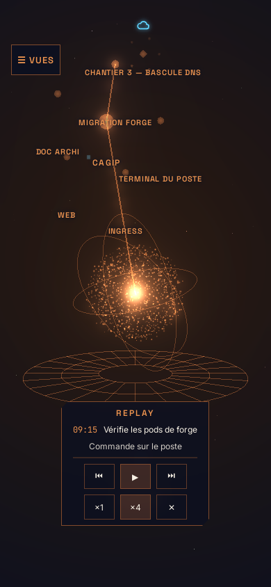
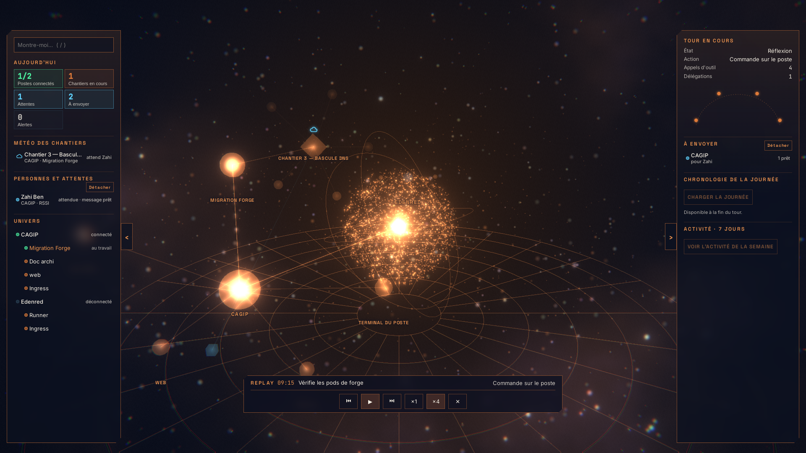
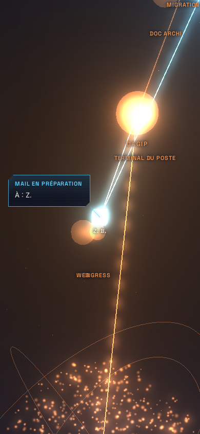
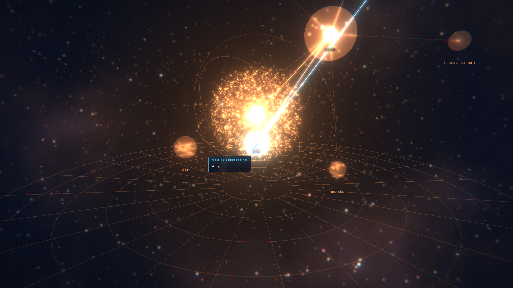
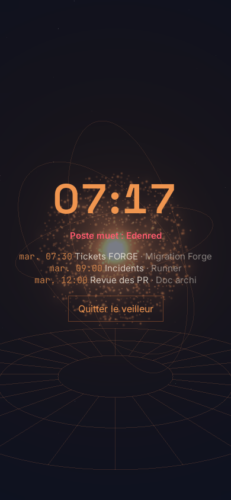
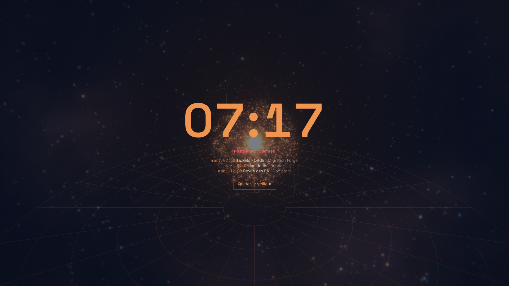
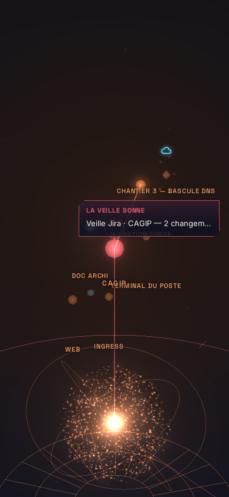
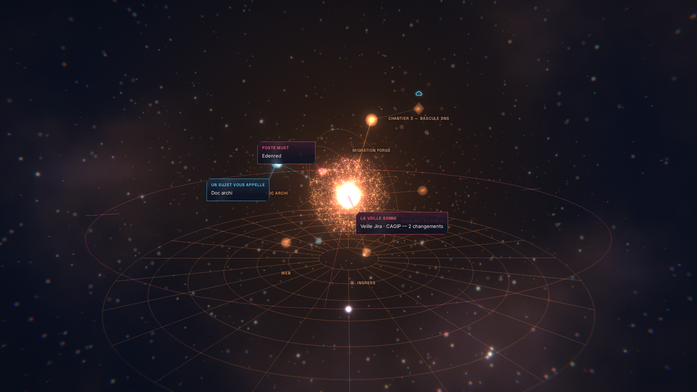
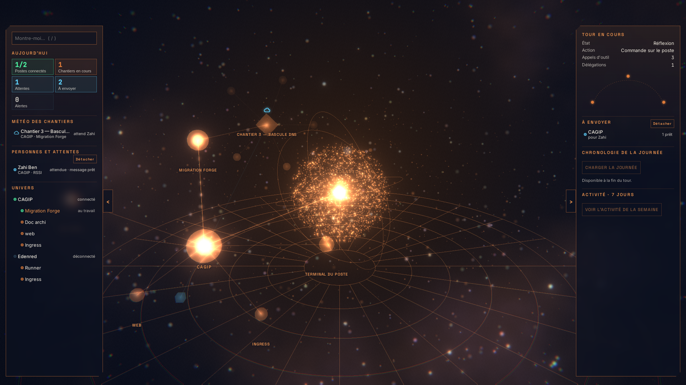
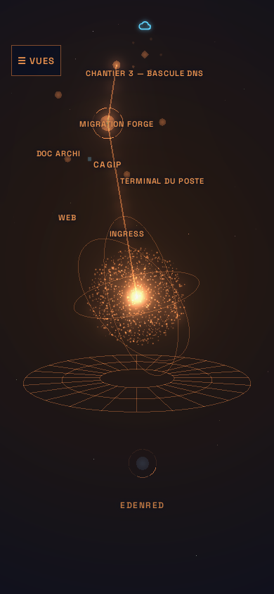
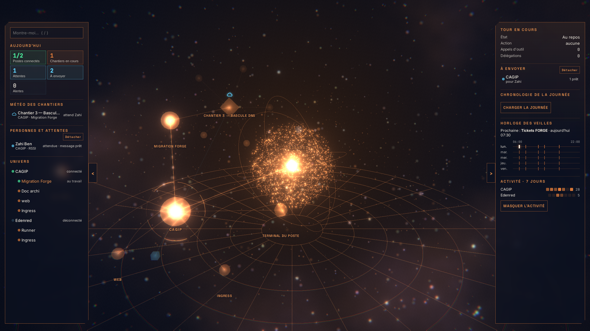
Polissage final (SF-236-27) : anneau d'activité ramené de 0,62 à 0,42 (il débordait du halo du client) et plancher d'éclat à 0,12 (l'anneau se lit en entier) ; échos du radar de 16 à 40 px (ils se perdaient sur l'anneau) ; les scènes de banc de l'itération 4 enregistrées (elles retombaient sur le cœur seul).
Règles §7.3 : rouge réservé aux alertes (radar : veille et poste muet ; cloche en teinte d'attente) · texte DOM net (barre de replay, veilleur, horloge, activité) · rien ne navigue · aucun appel pendant un tour.
Mesures : i/s PC et téléphone à relever sur les appareils du PO (le banc est en rendu logiciel) ; l'événement RENDER remonte désormais aussi les vues ouvertes (replays, presentations, cockpits, nights, activity). Lecture J+7 / J+14 après le déploiement de fin de vague (GET /api/admin/jarvis/measure).